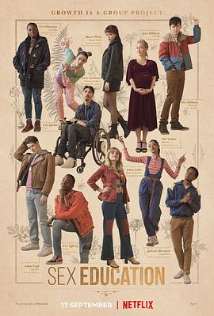

性爱自修室 第三季 / Sex Education Season 3
又名：性教育
剧集开始讨论更多的内容，友情真好啊
作品信息
| 导演 | 本·泰勒 / 鲁尼亚罗·马普福莫 |
| 编剧 | 劳瑞·纳恩 / 索菲·古德哈特 / 艾丽斯·西布赖特 / 塞琳娜·林 / 马万·里兹旺 / 特米·威尔基 |
| 主演 | 阿萨·巴特菲尔德 / 吉莲·安德森 / 舒提·盖特瓦 / 艾玛·麦基 / 康纳·斯温德尔 / 凯达·威廉姆斯特灵 / 阿利斯泰尔·皮特里 / 米米·基恩 / 艾米·卢·伍德 / 钱尼尔·库勒 / 西蒙娜·阿什利 / 塔尼娅·雷诺兹 / 帕特里夏·艾莉森 / 米卡埃尔·佩斯布兰特 / 拉卡·塔克雷尔 / 杰米玛·科克 / 安-玛莉·杜芙 / 詹森·艾萨克 / 吉姆·霍威克 / 萨曼莎·斯毕洛 / 萨米·瓦塔尔巴利 / 乔治·罗宾森 / 克里斯·詹克斯 / 钦尼·埃祖杜 / 杜阿·萨利赫 / 乔治·索纳 / 利诺·法希奥利 / 阿明·卡丽玛 / 乔乔·马卡里 / 露易丝·奇米巴 / 亚历山大·韦斯特伍德 |
| 类型 | 剧情 / 喜剧 / 爱情 |
| 制片国家/地区 | 英国 |
| 语言 | 英语 |
| 首播 | 2021-09-17(英国) |
| 季数 | 3 |
| 集数 | 8 |
| 单集片长 | 55分钟 |
| IMDb | tt11761560 |
最后一次看到是 2026-08-12T21:11:24+08:00 · 豆瓣原页